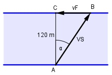

Aufgabe 114 Ein Fluss ist 120 m breit und hat eine Strömungs- geschwindigkeit von 0,25 m/s. Ein Schwimmer möchte ihn so durchschwimmen, dass er am gegenüberliegenden Uferpunkt ankommt. Er schafft 100 m in 2 Minuten und 40 Sekunden in stehendem Wasser. Welchen Richtungswinkel α muss er einhalten? Welche Zeit t in s braucht er für die Durchquerung?

s v = --- t 2 min 40 s = 2 * 60 s + 40 s = 160 s 100 m vS = ------- = 0,625 m/s 160 s Im Dreieck ABC: vF 0,25 m/s sin α = ----- = ------------ = 0,4 --> α = 23,6° vS 0,625 m/s Kleinere = R * sin 37,5° = = 74,2 N * 0,6088 = 45,2 N 120 m cos 23,6° = --------- |*AB AB AB * cos 23,6° = 120 m | :cos 23,6° 120 m 120 m AB = ----------- = --------- = 130,9 m cos 23,6° 0,9164 s 130,9 m t = --- = ----------- = 209,4 s v 0,625 m/s